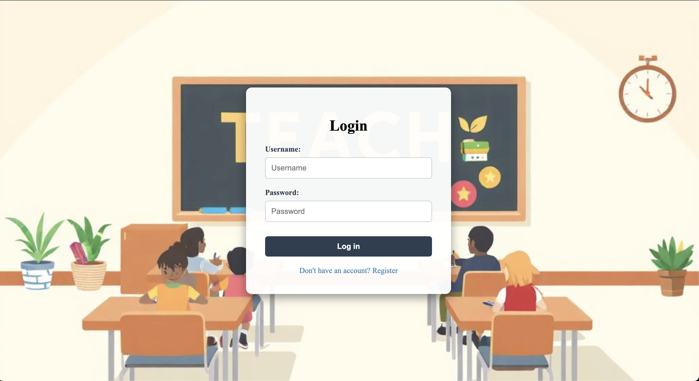
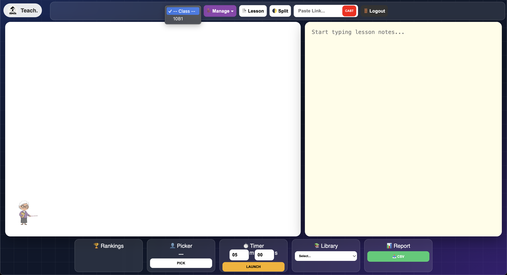
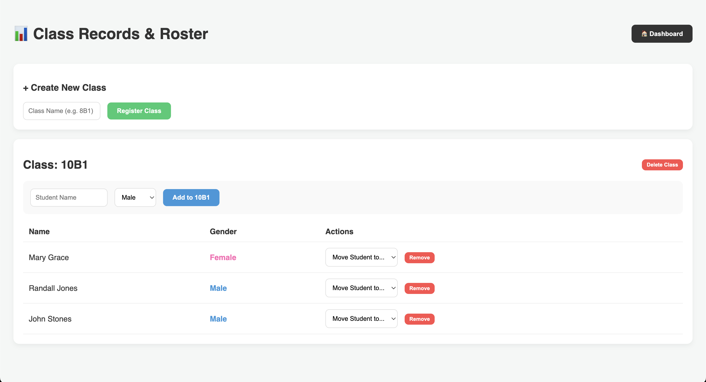
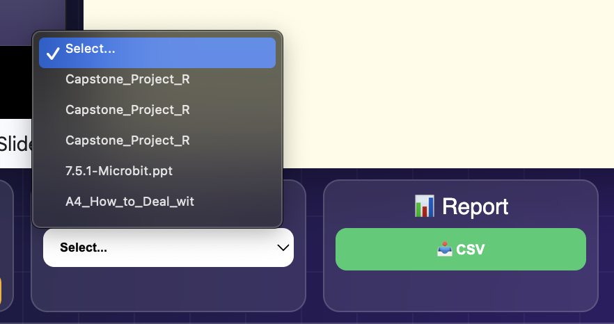
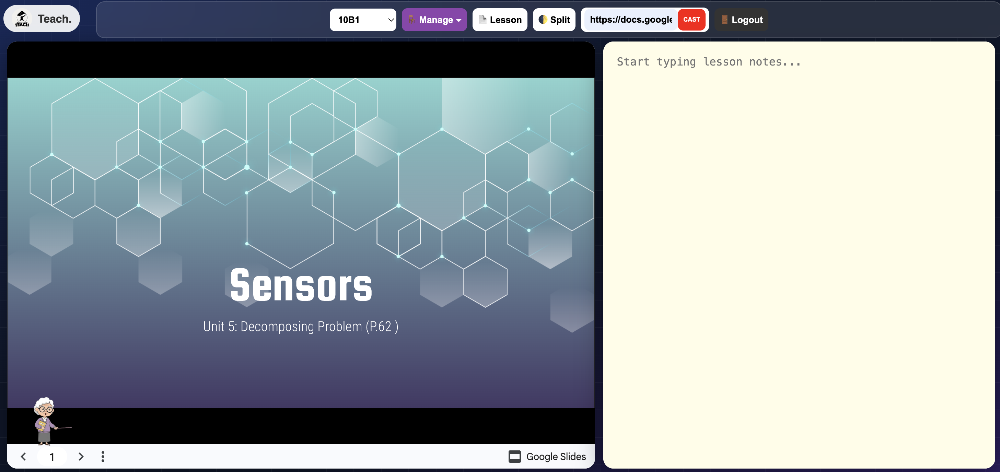
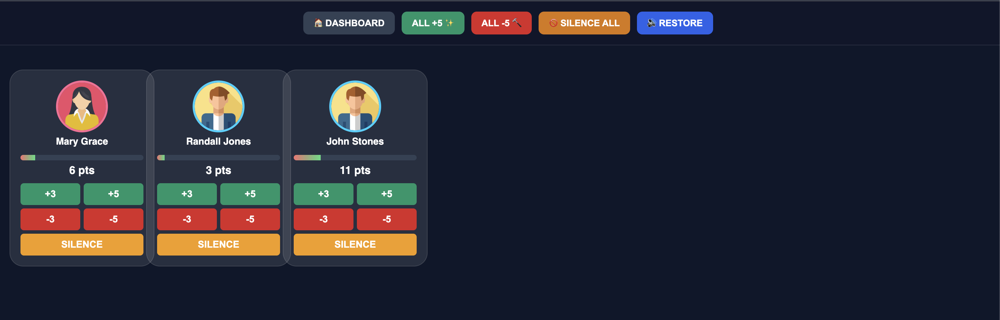
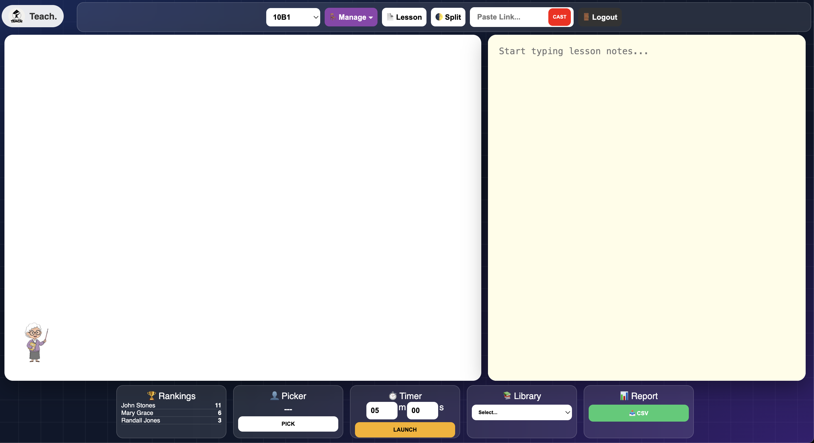
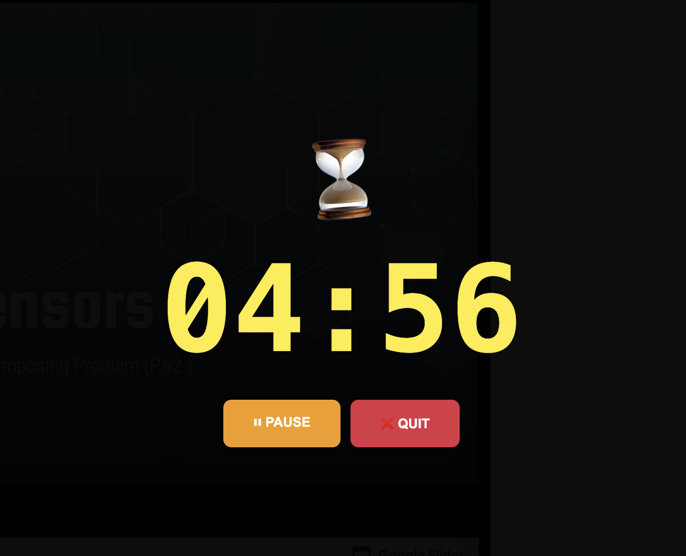
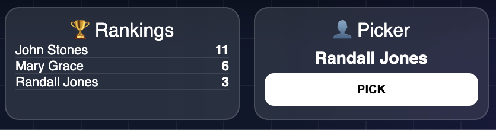

TEACH is an interactive classroom management system
designed to support teachers before, during, and after
classroom activities. Instead of depending on several
unrelated applications, teachers can use TEACH to organize
their classes, manage learning materials, conduct
activities, present content, monitor behavior, and
encourage student participation from one central platform.
The system is also designed with online and offline
usability in mind. Materials and data that have already
been stored in TEACH can remain accessible even when the
device temporarily loses internet connectivity. This
makes the platform useful in classrooms where internet
access may be limited or unreliable.
Project Purpose
TEACH provides teachers with a centralized
workspace for planning lessons, managing student
rosters, conducting classroom activities, sharing
resources, and monitoring student participation.
Designed for Teachers
The system gives teachers practical tools for
maintaining classroom authority, selecting
students, managing time, presenting resources, and
organizing student performance.
Designed for Students
Students can participate in activities, view their
current points, understand their class standing,
and remain engaged through an interactive
classroom experience.
Online and Offline Support
Files and data already saved in the system can be
accessed and used even when the device is offline.
This helps teachers continue classroom activities
without depending entirely on a live connection.
Interactive Classroom Control
TEACH supports real-time classroom interaction
through behavior points, avatar controls,
random name selection, countdown activities, and
student rankings.
Centralized Organization
Classes, students, instructional materials,
presentations, activities, and performance
information are organized in one accessible
educational system.
Project Demonstration
Watch the demonstration to see how TEACH can be used
to manage classroom activities, present educational
resources, and support student engagement.
The demonstration video presents the primary
functions and classroom workflow of the TEACH system.
Platform Features
TEACH Features and System Screenshots
The following features show how TEACH supports
classroom organization, resource management,
interactive learning, student monitoring, and
teacher-led presentations.

01
Login and Welcome Interface
The login page serves as the main welcome
interface of TEACH. It provides users with an
organized entry point into the system and
establishes a clear separation between the
public welcome experience and the classroom
management workspace.
After signing in, teachers can access the tools
required to manage classes, students,
materials, presentations, activities, and
classroom performance.
Welcomes users to the TEACH platform
Provides secure access to the system
Leads teachers to their classroom tools
02
Dashboard
The dashboard is the main interface of the
TEACH website tool. It acts as the teacher's
central command center, bringing the most
important classroom functions together in one
place.
From the dashboard, teachers can quickly
navigate to their selected class, manage
student information, open stored materials,
start classroom activities, cast content,
control timers, use the name picker, and
review student rankings.
By presenting the system's major functions in
an organized layout, the dashboard reduces
unnecessary navigation and helps teachers
transition smoothly between different parts of
a lesson.
Central access point for TEACH features
Organized classroom navigation
Quick access to activities and resources
Supports efficient lesson management

03
Class Selection
The class-selection feature allows teachers to
choose the correct class before beginning
classroom activities. This helps ensure that
the active student roster, points, rankings,
and classroom records all correspond to the
intended class.
Selecting the correct class is especially
important when a teacher handles multiple
sections or grade levels. It helps prevent
student information and performance points
from being recorded under the wrong roster.
Choose the active class or section
Load the correct student roster
Keep rankings connected to the correct class
Reduce classroom record errors

04
Student and Class Management
Student Management allows teachers to create
and organize classes, maintain student
rosters, and keep classroom records updated.
Teachers can add new classes and students
whenever necessary.
The feature also supports changes in student
placement. Students can be moved from one
class to another when needed, such as when
schedules or sections change. Teachers can
also remove students who transfer out of the
school or are no longer part of the class.
Add and manage classroom sections
Create and update student rosters
Move students between classes
Remove students who transfer out
Maintain accurate classroom records
05
Library
The Library allows teachers to upload PDFs,
files, documents, and other classroom data into
TEACH. These resources are stored locally
within the system so that teachers can access
them when preparing or conducting lessons.
Because stored resources can be accessed with
or without internet connectivity, teachers can
continue using important classroom materials
even when the connection is unavailable.
Upload PDFs, files, and classroom data
Store instructional resources locally
Access materials online or offline
Keep teaching resources organized

06
Active Library
The Active Library displays materials that have
already been uploaded by the teacher and are
currently available for classroom use. It
functions as a working collection of resources
that can be accessed directly from the TEACH
homepage.
Teachers can use these materials during online
or offline classroom sessions. The Active
Library makes frequently used resources easier
to locate, reducing the time spent searching
through stored files during a lesson.
Shows teacher-uploaded materials
Accessible from the TEACH homepage
Supports online and offline use
Provides quick access to active resources

07
Casting
Casting allows teachers to use files and data
that are already stored in TEACH and display
them through the TEACH website. Once the
required content has been saved in the system,
it can continue to work whether the device is
online or offline.
Teachers can also cast videos and other media
for classroom presentations. This allows
lessons, demonstrations, reference materials,
and visual content to be presented in an
organized way without repeatedly searching for
external resources.
Display stored files and classroom data
Supports online and offline presentations
Allows videos to be cast for lessons
Helps teachers present content efficiently

08
Behavior Management
Behavior Management allows teachers to award
and deduct points from students based on
classroom participation, conduct, cooperation,
and completion of activities. This gives
teachers a consistent way to recognize positive
behavior and respond to classroom concerns.
The feature also gives teachers authority over
student avatars inside the classroom
environment. Teachers can silence an avatar
when necessary to represent classroom
authority and restore the avatar's status when
the student is permitted to participate again.
Award points for positive behavior
Deduct points when classroom rules are broken
Silence student avatars when necessary
Restore avatar status when appropriate
Support structured classroom discipline

09
Ranking System
The Ranking System allows students to see
their current standing in the class based on
the points they have earned. It provides
students with a visible indication of their
participation and classroom performance.
Rankings are connected to the selected class
roster, ensuring that students are compared
only with the correct group. The feature can
encourage motivation, participation, healthy
competition, and awareness of individual
progress.
Displays students' current points
Shows class standing and rankings
Encourages participation and motivation
Reflects the active class roster

10
Countdown Timer
The Countdown feature helps teachers manage
the duration of classroom activities. Teachers
can set a time limit using minutes and seconds,
while students can clearly see how much time
remains.
This makes activities more structured and helps
students stay aware of deadlines. The timer
can be used for individual tasks, group work,
quizzes, discussions, preparation periods, and
other timed classroom exercises.
Set activity times in minutes and seconds
Shows remaining time to students
Supports timed individual or group activities
Helps maintain lesson pacing

11
Random Name Picker
The Name Picker allows teachers to randomly
select students to answer questions,
participate in discussions, demonstrate a
solution, or complete a classroom activity.
Random selection promotes fairness and gives
every student an opportunity to participate.
It can also help teachers avoid repeatedly
calling on the same students and encourage
greater attention throughout the lesson.
Select students randomly
Support fair classroom participation
Use for questions and activities
Encourage students to remain attentive
Project Summary
TEACH combines classroom organization, resource
management, interactive activities, behavior
monitoring, student rankings, and teacher presentation
tools in one educational platform. Its online and
offline capabilities allow teachers to continue using
previously stored materials and data even when internet
access is unavailable.
By connecting teacher controls with student
participation, TEACH creates a more organized,
interactive, and manageable classroom environment.
About the Project
About TEACH
TEACH was developed as a technology-based solution for
improving classroom organization, participation, and
instructional delivery. The platform focuses on the needs
of teachers who require accessible tools for managing
classroom information, resources, activities, and student
behavior.
Through its integrated features, TEACH supports both
traditional classroom management and interactive
technology-assisted learning. It helps teachers maintain
control of classroom activities while giving students
clear opportunities to participate, monitor their points,
and understand their progress.
Get in Touch
Contact
For more information about the TEACH Classroom Management
System, its features, or its development, please contact
the project developer.